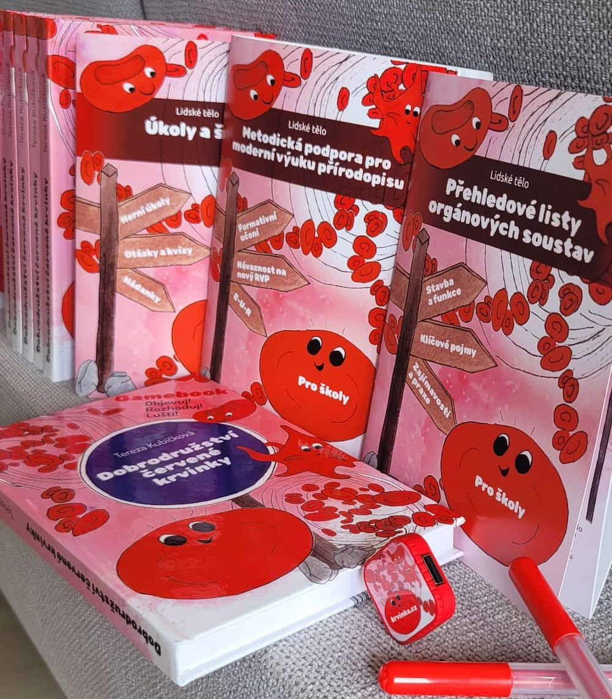
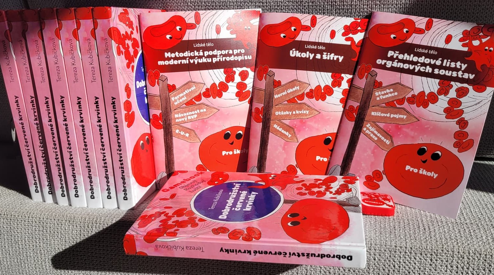
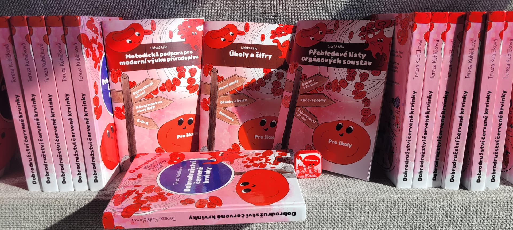

Vyberte variantu pro vaši školu
Sady se liší počtem fyzických gamebooků a způsobem, jakým s nimi žáci ve třídě pracují. Metodika, brožury, pracovní listy, výukové karty i digitální materiály jsou součástí všech variant.

Startovací sada pro učitele
1 fyzický gamebook
2 999 Kč
Vhodná pro školy a pedagogy, kteří se s projektem chtějí nejprve seznámit nebo pracovat s celou třídou společně.
- 1 fyzický gamebook
- kompletní metodika pro pedagoga
- 2 doprovodné brožury
- pracovní listy
- výukové karty
- digitální materiály
- licence pro jednu školu
Předobjednat startovací sadu
Doporučeno pro běžnou třídu

Dobrodružství v týmech
8 fyzických gamebooků
6 290 Kč
Navrženo pro práci celé třídy ve skupinách po třech až čtyřech žácích, s prostorem k diskusi a porovnávání postupů.
- 8 fyzických gamebooků
- kompletní metodika pro pedagoga
- 2 doprovodné brožury
- výukové karty
- digitální materiály
- nástroje pro reflexi a ověřování porozumění
- licence pro jednu školu
Předobjednat týmovou sadu

Gamebook pro každého
30 fyzických gamebooků
16 990 Kč
Pro školy, které chtějí pokrýt celý ročník najednou. Každý žák prochází příběhem sám, vlastním tempem, a může se k němu vracet i mimo hodinu.
- 30 fyzických gamebooků
- kompletní metodika pro pedagoga
- 2 doprovodné brožury
- pracovní listy
- výukové karty
- digitální materiály
- podklady pro reflexi a sebehodnocení žáků
- licence pro jednu školu
Předobjednat gamebook pro každého
{kind=link}
{kind=link}
{kind=link}
{kind=link}